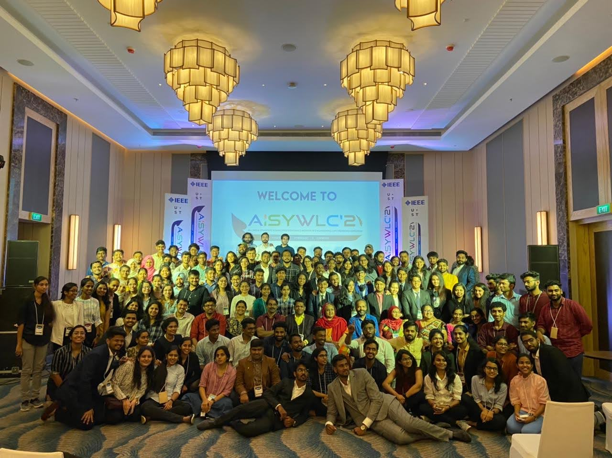
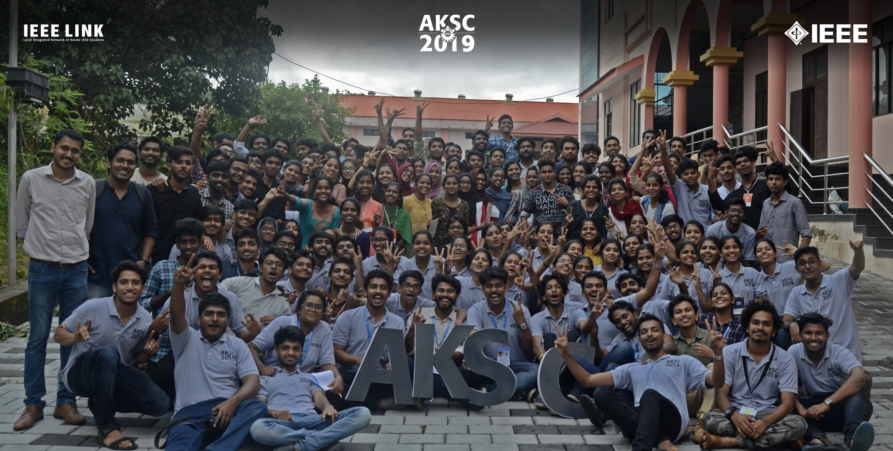
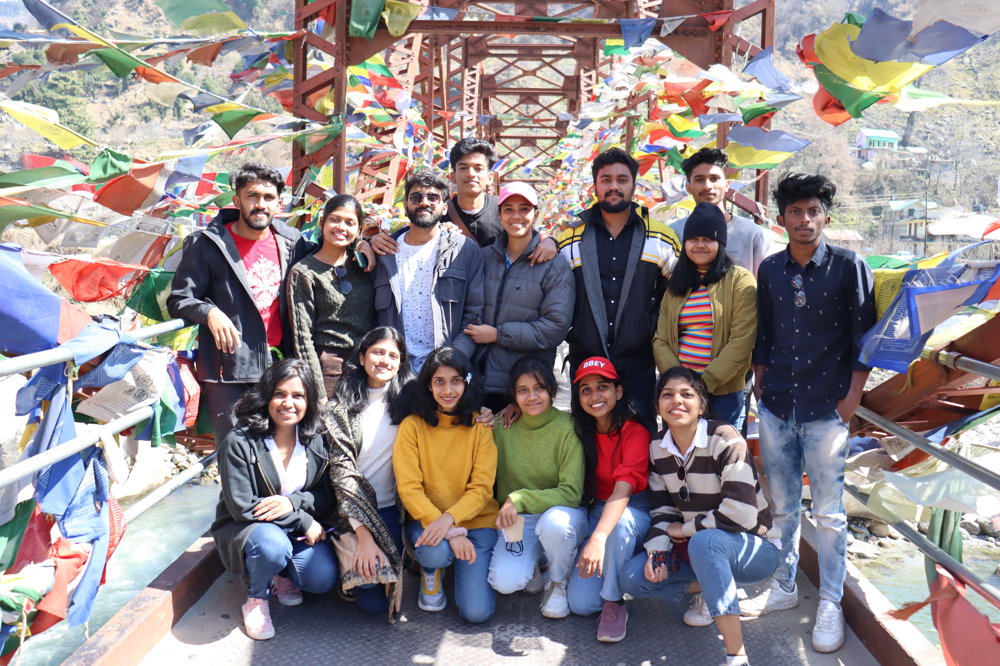
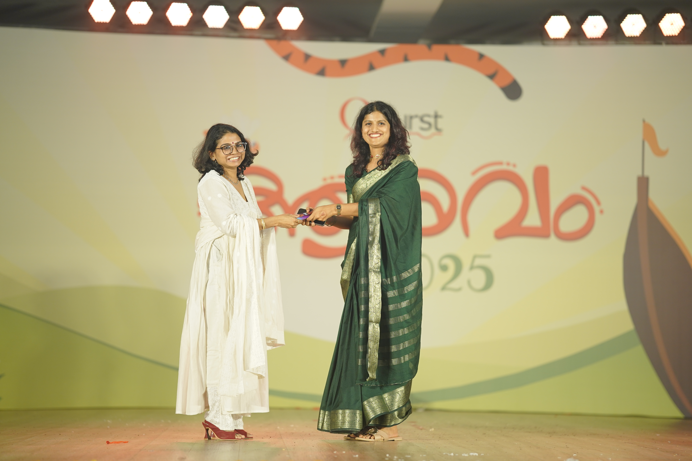
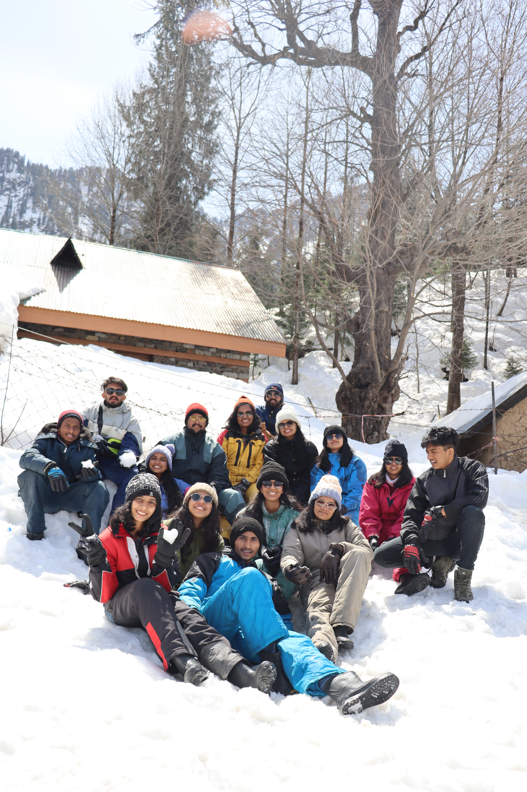
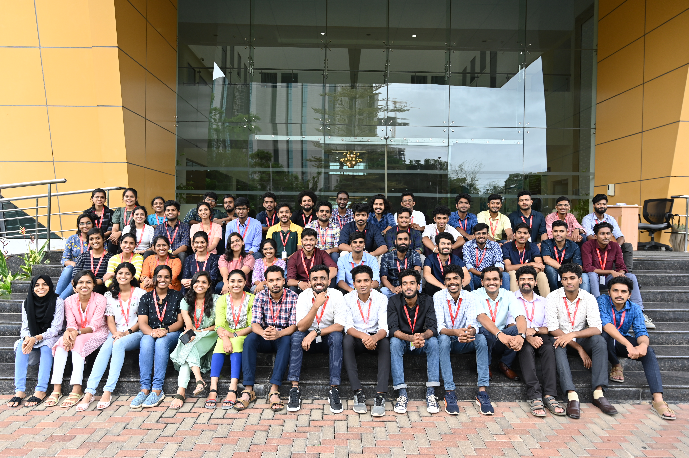
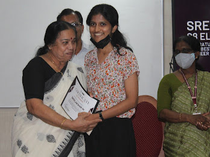
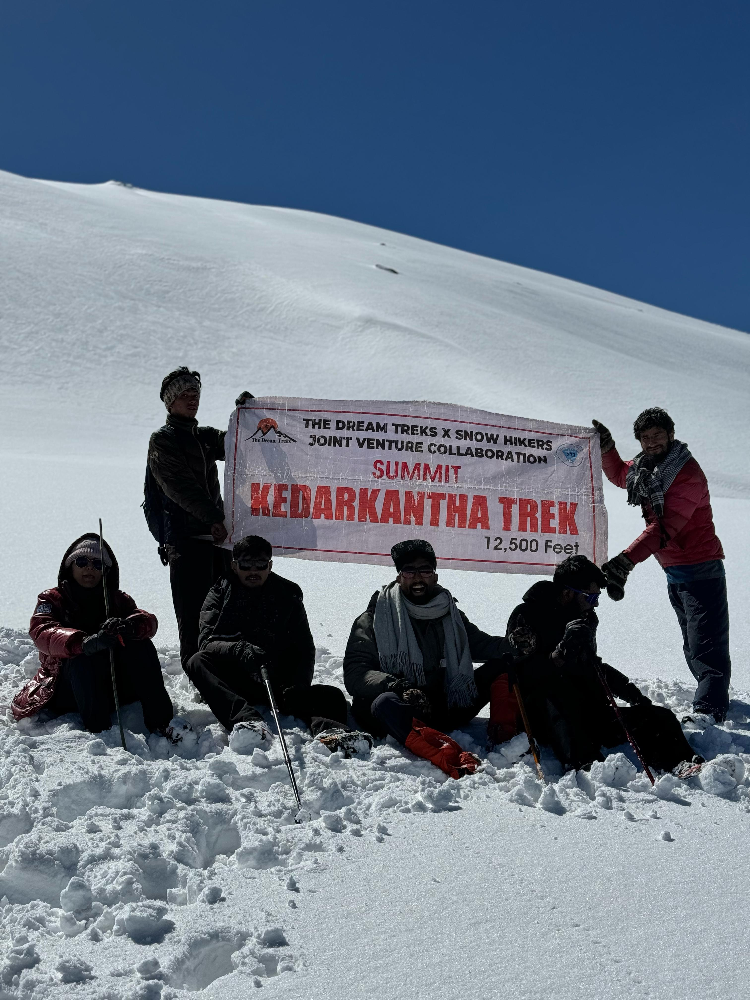
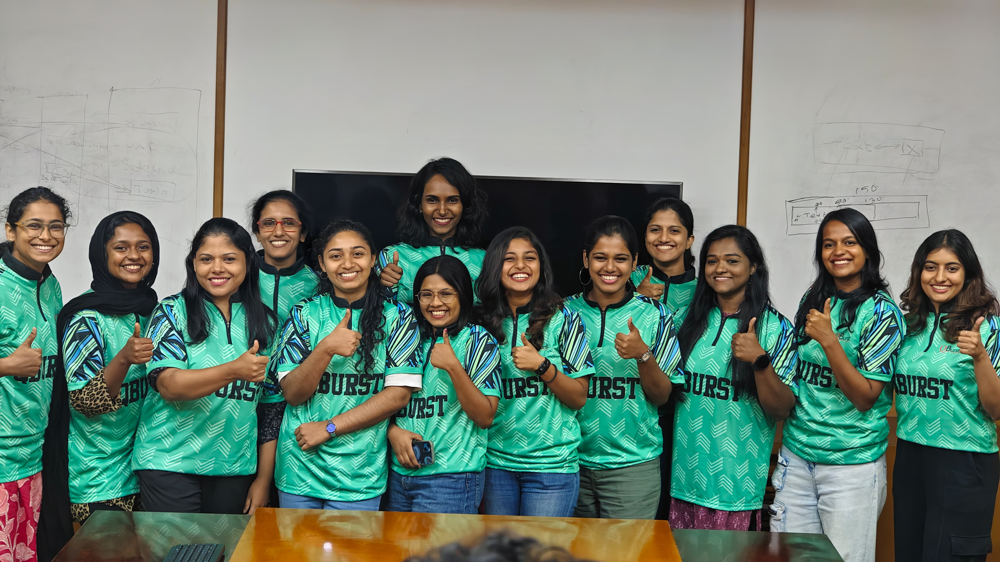
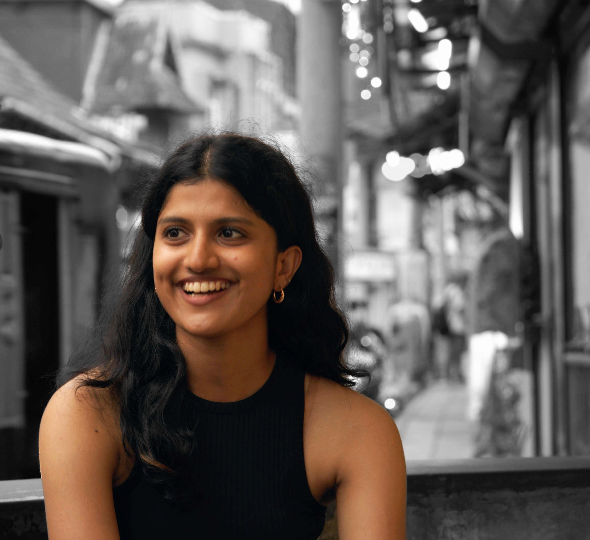

Gallery











A Full-Stack Software Developer and M.Eng. student in Automation & IT at TH Köln,
who loves building software solutions with creativity and purpose.
My fascination with code began early when I first saw a few lines of Python code bring drawings to life on the screen, and I knew I had found something that transfer logic into creativity.
Since then, I’ve turned curiosity into capability; optimizing systems, creating applications, and delivering value through clean and maintainable code.
Beyond the keyboard, you’ll find me exploring new places, trying out a new recipes, deeply drawn into some books or scrap journaling that tells short stories of my memorable days of life.
✨ “Creating with curiosity, coding with purpose.”

Designed and developed .NET Core web applications using C#, Angular, and SQL Server. Mentored junior engineers and optimized CI/CD workflows, improving code efficiency by 40%.
Organized and coordinated events under the student team of IEEE Kerala Section.
Managing technical initiatives under SHE GCEK and mentoring and training junior students on Web Development. Contributed to the development of SHE GCEK's official website.
Managing the socio-technical initiatives under ISTE GCEK.
Organized technical events under IEEE LINK and managed the technical documentation of team activities. Initiated the IEEE LINKLINE Newsletter for IEEE LINK Team.
Travel keeps me curious - from trekking in the heighst peaks of Himalayas to exploring cozy European towns, I love discovering stories that connect people and places.
“Every journey is a new chapter in our lives - waiting to be written.”Cooking is my love-language - If I cooks for you, that means you are kinda special to me. I enjoy trying fusion dishes that bring together Indian flavors with global influences.
Books are my companions and journaling is my therapy - I love reading about emotions, personal growth, technology, and human behavior. Recent favorite: “So Good They Can't Ignore You”.
Documenting every moments in life makes me happy - I create digital content that captures travel, lifestyle, and moments - blending storytelling and creativity.
“Creativity is intelligence having fun.” - Albert Einstein








Want to get in touch? I'd love to hear from you. Here's how you can reach me...
sreelakshmimanikoth@gmail.com
+49 15510850661